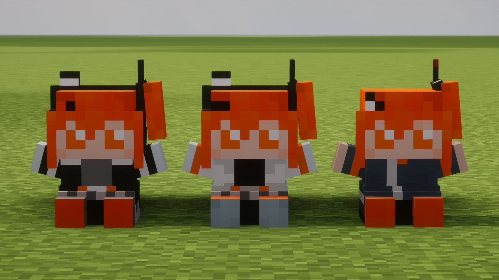
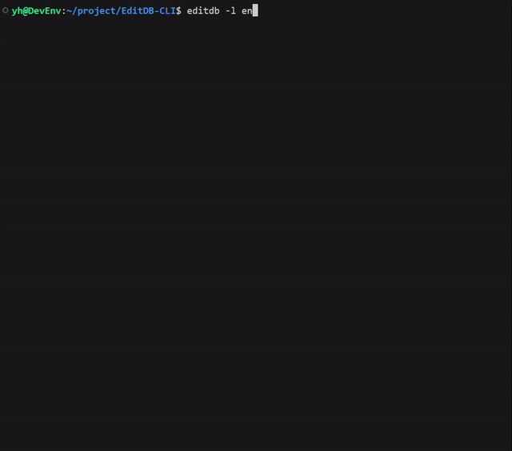

- 足立データベース
足立レイのツイートが全てまとめられたサイト、及びAPIサーバー。足立レイのツイートをランダムで引けたり検索出来たりする。需要は不明。
- AdachiRei-nui

マインクラフトに足立レイのぬいぐるみを追加するMOD。
ローダーはFabric、1.21.6から1.21.11に対応。
- スティーブでBadAppleを再生
見ての通りスティーブでBadAppleを再生する動画。
ニコ動で2万再生されたりエンタメのランキングで1位になったりしてた。うれしい。
- FDDで熱異常を演奏
これも見ての通りの動画。
8インチFDDのピンヘッダに関する情報があまりなくて苦労した。
- ReaperBadappleDrawing
DAWソフトREAPERのタイムライン上に空のアイテムを使用して映像を描画するツール。需要は不明。
- EditDB-CLI

SQLiteデータベースをコマンドラインから作成、編集できる対話型のCLIツール。npmからインストール可能。
npm install -g editdb-cli